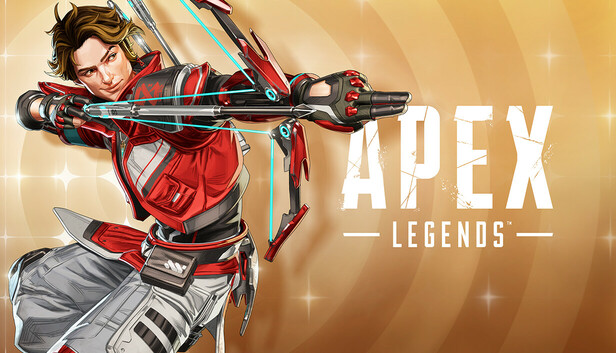

Pasatiempos Favoritos
Jugar Videojuegos
Desde la cuarentea desarrole un gusto por los videojuesgos y en mis ratos libres es lo que prefiero hacer, a veces me divierto, a veces me estreso.

Entrenar gimnasio
Ir al gym se volvio algo escencial en mi dia a dia, siempre encuentro el momento perfecto para ir. Ya sea entre clases, despues de la escuela
o en los dias que voy a estar muy ocupado entreno desde las 6 de la mañana

Grabar Videos
Soy algo introvertido, pero disfruto mucho ver videos mientras hago mis actividades cotidianas. Aún no es un pasatiempo, pero me gustaría empezar
a grabar videovlogs, no esta en mi plan ser alguien reconocido. Mi idea es mas como grabar video-diarios